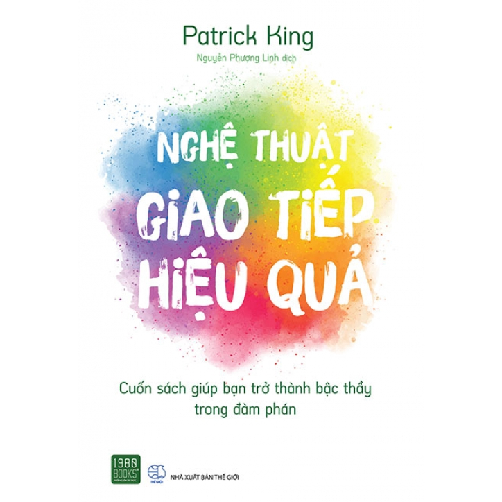

SÁCH KỸ NĂNG GIAO TIẾP
Những Cuốn sách hay về kỹ năng giao tiếp mà sinh viên nên tìm đọc

Có khi nào bạn cảm thấy không muốn nói chuyện với bố mẹ hay người thân vì họ không lắng nghe bạn không? Có khi nào bạn cãi nhau với đứa bạn thân vì hiểu sai ý nhau không? Hay có bao giờ từ bỏ một mối quan hệ vì không thể giao tiếp? Nếu có thì hãy đọc ngay những cuốn sách dưới đây để có thể cải thiện kỹ năng giao tiếp của mình.
11 Bí Quyết Giao Tiếp Để Thành Công
Để khai thác triệt để sức mạnh của sự hấp dẫn, chúng ta phải hiểu nó là gì và hoạt động ra sao. Rõ ràng, tất cả chúng ta đều là những thực thể khác biệt, và đó là một thực tế chúng ta cần phải chấp nhận và đối mặt.Mỗi chúng ta có quan điểm khác biệt về sự hấp dẫn của bản thân. Nhưng các nhân tố cơ bản thúc đẩy sự hấp dẫn về cơ bản là như nhau đối với tất cả chúng ta. Cuốn sách này sẽ đi sâu vào soi tỏ lần lượt từng bí quyết này, đào sâu chúng để tìm hiểu về vai trò của chúng trong cả môi trường kinh doanh lẫn xã hội, và cách thức tổng hòa 11 bí quyết này trong cuộc sống của chúng ta.
Trái với những gì nhiều chuyên gia về networking tư vấn, mọi tương tác đều không cần phải có mục đích hay mục tiêu cụ thể. Chúng ta không cần phải tập trung cao độ vào kết quả có được từ một cuộc nói chuyện, bởi việc xây dựng các mối quan hệ không phải các giao dịch mà là những kết nối. Nó liên quan đến việc tạo ra các cơ hội cho những mối quan hệ đáng tin cậy và trung thực, đồng thời mang lại lợi ích cho tất cả các bên liên quan. Nó liên quan đến sự yêu thích và được yêu thích.
Kỹ Năng Lắng Nghe Trong Giao Tiếp

Với độ dày 163 trang không kể bìa, được chia thành sáu chương, “Kĩ năng lắng nghe trong giao tiếp” là một cuốn sách nhỏ gọn nhưng phải khiến bạn ngạc nhiên vì số lượng các cách lắng nghe được đề cập bên trong. Từng chương, từng đoạn, từng câu chữ đều đưa ra những bài học mà bạn không thể làm lơ nếu muốn chinh phục kĩ năng khó hơn cả việc nói này.
Frank Tyger, nhà báo và nhà vẽ tranh biếm họa người Mĩ, từng nói: “Thính giác là một trong năm giác quan của con người. Nhưng lắng nghe là cả một nghệ thuật.” Thật vậy. Nhiều người cho rằng việc nghe dễ hơn nói bởi họ không phải nghĩ nên và không nên nói gì. Những người không biết cách trò chuyện lại càng lấy cớ lắng nghe để đẩy trách nhiệm cho đối phương.
Tuy nhiên, việc lắng nghe cũng quan trong như việc nói vậy, bởi để giao tiếp thành công cần có sự tương tác hai chiều giữa hai bên đối thoại. Người nghe cần thấu hiểu, hay ít nhất là nắm bắt được chủ đề người nói đang đề cập tới, từ đó khiến người nói có cảm giác thoải mái và tạo dựng được một mối quan hệ tốt đẹp. Lắng nghe, trên thực tế, là một kĩ năng khó. Nhưng cuốn sách Kĩ năng lắng nghe trong giao tiếp của Hiraki Noriko sẽ dạy bạn mọi thứ bạn cần để dành 50% chiến thắng trong đời.
Nghệ Thuật Giao Tiếp Để Thành Công

Trong môi trường công sở, việc đối mặt với sếp, đồng nghiệp và khách hàng là không thể tránh khỏi. Nếu may mắn, nhân viên có thể có cơ hội thăng tiến và mở rộng các mối quan hệ. Nhưng nếu cuộc sống của họ không suôn sẻ, mỗi ngày trôi qua ở văn phòng sẽ không khác gì một cực hình.Nghệ thuật giao tiếp để thành công nơi công sở của Leil Lowndes không thể loại bỏ mọi khó khăn trong cuộc sống của nhân viên văn phòng, nhưng ít nhiều đưa ra lời khuyên để ít gây xung đột nhất có thể. Cuốn sách sẽ gợi ý những thủ thuật để giao tiếp hiệu quả với đồng nghiệp, đồng thời hướng dẫn độc giả phương pháp để tạo dựng một hình ảnh chuyên nghiệp trong mắt mọi người.
Nghệ Thuật Giao Tiếp Hiệu Quả – Patrick King
Con người cũng thích chia sẻ thông tin làm sao để bản thân có vẻ thông minh hơn hoặc được săn đón hơn. Điều này kích thích họ tiếp tục chia sẻ, vì bạn đã xác nhận rằng họ thực sự thông minh và có tầm nhìn. Họ sẽ được kích thích để tiếp tục thể hiện trí thông minh và tầm nhìn của mình.
Trò chuyện, giao tiếp là việc đơn giản, hầu như ai cũng làm được. Nhưng giao tiếp sao cho hiệu quả lại là cả một nghệ thuật mà khó người nào dám tự tin cho rằng mình đã tinh thông.
Càng ngày bạn sẽ càng nhận ra rõ hơn, rằng hội thoại không chỉ là cơ hội để ta chia sẻ những cảm xúc, suy nghĩ, mà còn là lúc ta “khoe” ra những điểm thú vị ở bản thân, là cơ hội để ta gây ấn tượng, thuyết phục người khác thuận theo ý của mình. Như vậy, trong các tình huống giao tiếp khác nhau, mỗi người đều ít nhiều mong muốn đạt được một điều gì đó. Và Nghệ thuật giao tiếp hiệu quả là cuốn sách hướng dẫn bạn cách giao thiệp tự nhiên và hiệu quả nhất với mọi người, để xây dựng các mối quan hệ và làm chủ các tình huống nảy sinh giữa người với người.